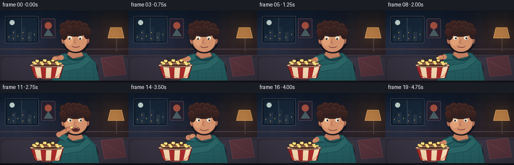
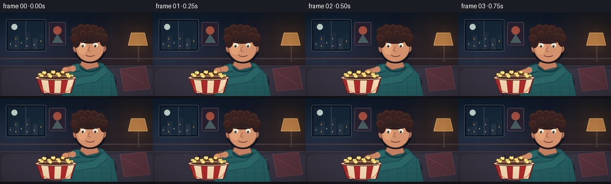

CODING AGENTS AS PIXEL WORLD MODELS
traex/GPT-5.6-Sol · motion_rationality_0021
点击播放 · 原生 RGB 像素
逐轮保存的候选
回放视频、检查图与代码变化。
每份候选均可单独播放。实际图片检查记录在下方工具轨迹中。
候选 01播放与检查图
点击播放 · 原生 RGB 像素


展开代码变化
--- 上一保存版本
+++ 本次保存版本
@@ -0,0 +1,221 @@
+from pathlib import Path
+import math
+import numpy as np
+from PIL import Image, ImageDraw, ImageFilter
+import artifact_io
+
+W,H,N,S = 256,144,20,4
+CASE = Path(__file__).resolve().parent
+
+def sc(v): return int(round(v*S))
+def coords(seq): return tuple(sc(v) for v in seq)
+
+def ellipse(d, box, fill, outline=None, width=1):
+ d.ellipse(coords(box), fill=fill, outline=outline, width=sc(width) if outline else 1)
+def polygon(d, pts, fill, outline=None, width=1):
+ pp=[(sc(x),sc(y)) for x,y in pts]; d.polygon(pp, fill=fill)
+ if outline: d.line(pp+[pp[0]], fill=outline, width=sc(width), joint='curve')
+def line(d, pts, fill, width, joint='curve'):
+ d.line([(sc(x),sc(y)) for x,y in pts], fill=fill, width=sc(width), joint=joint)
+def rounded(d, box, r, fill, outline=None, width=1):
+ d.rounded_rectangle(coords(box), radius=sc(r), fill=fill, outline=outline, width=sc(width))
+def arc(d, box, start, end, fill, width):
+ d.arc(coords(box), start, end, fill=fill, width=sc(width))
+
+def rot_ellipse(im, center, size, angle, fill, outline=None, ow=1):
+ # clean anti-aliased rotated oval on existing supersampled canvas
+ cx,cy=center; rw,rh=size
+ pad=4
+ tile=Image.new('RGBA',(sc(rw*2+pad),sc(rh*2+pad)),(0,0,0,0)); td=ImageDraw.Draw(tile)
+ td.ellipse((sc(pad/2),sc(pad/2),sc(pad/2+2*rw),sc(pad/2+2*rh)),fill=fill,outline=outline,width=sc(ow))
+ tile=tile.rotate(angle,resample=Image.Resampling.BICUBIC,expand=True)
+ im.alpha_composite(tile,(sc(cx)-tile.width//2,sc(cy)-tile.height//2))
+
+def smooth(x):
+ x=max(0,min(1,x)); return x*x*(3-2*x)
+def lerp(a,b,t): return a+(b-a)*t
+def interp(keys, f):
+ for i in range(len(keys)-1):
+ if keys[i][0] <= f <= keys[i+1][0]:
+ q=smooth((f-keys[i][0])/(keys[i+1][0]-keys[i][0]))
+ return tuple(lerp(keys[i][j],keys[i+1][j],q) for j in range(1,len(keys[i])))
+ return tuple(keys[-1][1:])
+
+def kernel(d,x,y,s=1.0, edge=(197,143,48), light=(255,236,145)):
+ # recognisable irregular popped corn, outlined for readability
+ pts=[(x-3*s,y+1*s),(x-2.6*s,y-1.7*s),(x-1*s,y-2.5*s),(x+.2*s,y-1.5*s),
+ (x+1.6*s,y-2.4*s),(x+3*s,y-.8*s),(x+2.4*s,y+1.6*s),(x+.5*s,y+2.5*s),(x-1*s,y+1.7*s)]
+ polygon(d,pts,light,edge,.55)
+ ellipse(d,(x-.8*s,y-.5*s,x+.25*s,y+.55*s),(238,193,82))
+
+def make_frame(f):
+ # supersampled cinematic room gradient
+ yy,xx=np.mgrid[0:H*S,0:W*S]
+ top=np.array([13,22,35.],float); bot=np.array([48,35,42.],float)
+ t=(yy/(H*S-1))[...,None]
+ arr=top*(1-t)+bot*t
+ # cool TV light from left + warm lamp glow at right
+ cool=np.exp(-(((xx/S-15)/100)**2+((yy/S-62)/62)**2))[...,None]
+ warm=np.exp(-(((xx/S-234)/55)**2+((yy/S-42)/53)**2))[...,None]
+ arr += cool*np.array([6,18,29.]) + warm*np.array([25,10,-3.])
+ # subtle fixed texture (no distracting frame noise)
+ tex=(np.sin(xx*.061)+np.sin(yy*.083))*0.65
+ arr += tex[...,None]
+ im=Image.fromarray(np.uint8(np.clip(arr,0,255)),'RGB').convert('RGBA')
+ d=ImageDraw.Draw(im)
+
+ # framed night window / movie glow
+ rounded(d,(10,11,77,65),3,(10,17,28,255),(68,81,98,255),1)
+ rounded(d,(13,14,74,62),1,(22,38,55,255))
+ # distant city and faint reflected moon
+ ellipse(d,(19,19,29,29),(204,221,216,235))
+ for i,(x,bh,col) in enumerate([(15,14,(29,47,65,255)),(24,23,(34,49,68,255)),(33,16,(25,43,59,255)),(43,29,(31,44,62,255)),(55,19,(37,51,66,255)),(66,25,(25,42,57,255))]):
+ d.rectangle(coords((x,62-bh,x+8,62)),fill=col)
+ for wy in range(int(66-bh),58,6):
+ if (i+wy//6)%2==0: d.rectangle(coords((x+2,wy,x+3,wy+2)),fill=(205,166,77,210))
+ line(d,[(43,14),(43,62)],(67,78,94,255),1)
+ # abstract film posters
+ rounded(d,(82,16,110,55),2,(38,31,46,255),(83,70,83,255),1)
+ ellipse(d,(89,23,103,37),(159,77,61,255)); polygon(d,[(87,51),(96,36),(106,51)],(71,91,95,255))
+ # warm side lamp
+ line(d,[(232,55),(232,82)],(80,64,59,255),2)
+ polygon(d,[(220,34),(242,34),(247,55),(215,55)],(180,122,70,255),(232,175,105,255),1)
+ # lamp glow bloom
+ glow=Image.new('RGBA',im.size,(0,0,0,0)); gd=ImageDraw.Draw(glow)
+ gd.ellipse(coords((210,23,253,68)),fill=(255,173,73,25)); glow=glow.filter(ImageFilter.GaussianBlur(sc(9))); im=Image.alpha_composite(im,glow); d=ImageDraw.Draw(im)
+
+ # wall molding and couch
+ line(d,[(0,77),(256,77)],(72,58,63,255),2)
+ rounded(d,(-10,89,267,151),13,(48,45,57,255),(66,62,73,255),1)
+ rounded(d,(3,94,79,143),10,(55,51,65,255)); rounded(d,(180,94,259,143),10,(55,51,65,255))
+ line(d,[(78,95),(75,144)],(35,34,44,255),2); line(d,[(181,95),(184,144)],(35,34,44,255),2)
+ # throw pillow at right
+ polygon(d,[(201,94),(244,90),(251,128),(208,132)],(87,51,60,255),(109,67,72,255),1)
+ line(d,[(207,101),(244,121)],(113,68,72,180),1)
+
+ bob=math.sin((f/19)*math.pi*2)*0.45
+ breath=math.sin((f/19)*math.pi*3)*0.5
+ # character torso shadow
+ ellipse(d,(108,89,195,151),(20,23,31,150))
+ # torso teal sweater, broad readable silhouette
+ polygon(d,[(124,88+bob),(145,82+bob),(172,85+bob),(190,104),(199,145),(103,145),(108,109)],(35,91,94,255),(25,61,67,255),1)
+ # sweater knit texture
+ for y in [102,111,120,129,138]:
+ line(d,[(111,y),(193,y+1)],(49,106,106,105),.65)
+ for x in [121,137,153,169,185]:
+ line(d,[(x,94),(x+2,143)],(27,73,78,90),.55)
+ # collar/neck
+ polygon(d,[(139,77+bob),(160,77+bob),(166,91+bob),(145,96+bob),(134,88+bob)],(194,126,94,255),(123,76,65,255),1)
+ arc(d,(133,78+bob,169,100+bob),7,170,(19,59,64,255),3)
+
+ # far arm cradles bowl (sleeve and hand)
+ line(d,[(177,96),(158,111),(126,116)],(29,76,82,255),14)
+ line(d,[(177,96),(158,111),(126,116)],(42,100,101,255),11)
+ rot_ellipse(im,(119,115),(7,4),-8,(199,129,96,255),(119,75,62,255),1)
+ d=ImageDraw.Draw(im)
+
+ # head shadow, ears, face
+ ellipse(d,(124,37+bob,178,85+bob),(16,20,28,150))
+ ellipse(d,(122,53+bob,132,67+bob),(191,120,91,255),(101,63,55,255),1)
+ ellipse(d,(168,53+bob,178,67+bob),(191,120,91,255),(101,63,55,255),1)
+ # face
+ ellipse(d,(126,32+bob,175,83+bob),(211,145,108,255),(100,63,55,255),1)
+ # cheek TV highlight
+ ellipse(d,(130,48+bob,146,70+bob),(225,160,118,110))
+ # hair mass and curls
+ ellipse(d,(122,25+bob,177,52+bob),(48,31,31,255),(25,21,25,255),1)
+ ellipse(d,(120,32+bob,135,59+bob),(50,31,31,255))
+ ellipse(d,(166,29+bob,181,57+bob),(45,29,30,255))
+ for x,y,r in [(126,31,7),(136,27,8),(147,27,8),(157,28,8),(168,32,8),(174,41,7),(125,42,7),(139,36,7),(153,35,7),(165,39,7)]:
+ ellipse(d,(x-r,y-r+bob,x+r,y+r+bob),(55+(x%3)*3,34,32,255))
+ arc(d,(x-r+2,y-r+2+bob,x+r-2,y+r-2+bob),190,350,(87,51,42,255),1)
+
+ # eyes follow moving snack; blink briefly while chewing
+ eye_y=54+bob
+ blink = f==15
+ line(d,[(134,49+bob),(144,48+bob)],(74,44,39,255),1.2)
+ line(d,[(155,48+bob),(165,49+bob)],(74,44,39,255),1.2)
+ if blink:
+ arc(d,(134,50+bob,144,57+bob),10,170,(60,39,38,255),1.2)
+ arc(d,(155,50+bob,165,57+bob),10,170,(60,39,38,255),1.2)
+ else:
+ ellipse(d,(135,51+bob,143,58+bob),(245,239,219,255)); ellipse(d,(156,51+bob,164,58+bob),(245,239,219,255))
+ # pupils shift down-left while reaching, inward/up as hand rises
+ px = -1.2 if f<7 or f>16 else .2
+ py = 1 if f<7 else 0
+ ellipse(d,(138+px,53+py+bob,141.5+px,57+py+bob),(40,34,31,255))
+ ellipse(d,(159+px,53+py+bob,162.5+px,57+py+bob),(40,34,31,255))
+ ellipse(d,(139+px,53.5+py+bob,140+px,54.5+py+bob),(255,255,244,255))
+ ellipse(d,(160+px,53.5+py+bob,161+px,54.5+py+bob),(255,255,244,255))
+ # nose
+ line(d,[(150,57+bob),(147,64+bob),(152,65+bob)],(151,91,76,255),1)
+ # mouth phase: opens for snack then closes and chews
+ if f in (11,12):
+ ellipse(d,(143,68+bob,159,78+bob),(84,37,39,255),(114,61,57,255),1)
+ arc(d,(145,69+bob,157,76+bob),190,350,(239,182,156,255),1)
+ elif f>=13 and f<=17:
+ chew=1.0+0.8*math.sin((f-13)*math.pi)
+ arc(d,(142,67+bob,160,75+bob+chew),15,165,(112,54,51,255),1.3)
+ # cheek bump conveys chewing
+ ellipse(d,(162,63+bob,169,69+bob),(220,150,111,150))
+ else:
+ arc(d,(143,67+bob,159,74+bob),15,165,(111,53,51,255),1.2)
+
+ # moving eating arm (shoulder->elbow->wrist), piecewise coherent trajectory
+ hk=[(0,110,96),(5,95,107),(6,95,106),(11,137,72),(12,138,71),(14,127,86),(17,112,98),(19,99,106)]
+ ek=[(0,122,94),(5,117,98),(6,117,98),(11,117,83),(12,117,82),(14,119,89),(17,119,94),(19,117,99)]
+ hx,hy=interp(hk,f); ex,ey=interp(ek,f)
+ sx,sy=132,92+bob
+ # sleeve upper arm and cuff
+ line(d,[(sx,sy),(ex,ey)],(24,65,72,255),15)
+ line(d,[(sx,sy),(ex,ey)],(42,102,103,255),11)
+ # forearm skin, outlined then lit
+ line(d,[(ex,ey),(hx,hy)],(118,73,62,255),10)
+ line(d,[(ex,ey),(hx,hy)],(207,137,101,255),7.5)
+ ellipse(d,(ex-5,ey-5,ex+5,ey+5),(204,134,100,255))
+ # hand orientation follows forearm
+ ang=math.degrees(math.atan2(hy-ey,hx-ex))
+ rot_ellipse(im,(hx,hy),(6.3,4.5),-ang,(211,142,105,255),(119,74,61,255),.8)
+ d=ImageDraw.Draw(im)
+ # pinched fingers projected toward snack/mouth
+ vx,vy=(hx-ex,hy-ey); ln=max(1,math.hypot(vx,vy)); ux,uy=vx/ln,vy/ln; nx,ny=-uy,ux
+ tipx,tipy=hx+ux*5,hy+uy*5
+ line(d,[(hx+nx*1.2,hy+ny*1.2),(tipx+nx*.8,tipy+ny*.8)],(219,149,111,255),2.2)
+ line(d,[(hx-nx*1.3,hy-ny*1.3),(tipx-nx*.7,tipy-ny*.7)],(194,121,93,255),1.8)
+ # single popcorn is visibly carried after pickup, disappears exactly into mouth
+ if 6 <= f <= 12:
+ kernel(d,tipx+ux*1.3,tipy+uy*1.3,0.85)
+
+ # foreground bowl, always in front of hand when reaching into it
+ # popcorn mound shadow and kernels
+ ellipse(d,(61,100,126,119),(103,63,40,255),(64,42,36,255),1)
+ for i,(x,y,s) in enumerate([(67,104,1),(74,101,1.15),(82,104,1),(89,100,1.2),(97,103,1.1),(105,100,1),(113,104,1.1),(120,106,.9),(78,108,1.1),(91,107,1),(103,108,1.15),(111,110,.9)]):
+ kernel(d,x,y,s)
+ # bowl body red with cream stripes
+ polygon(d,[(60,108),(127,108),(119,135),(70,135)],(170,43,42,255),(81,35,36,255),1.2)
+ polygon(d,[(68,109),(80,109),(83,135),(74,135)],(245,218,179,255))
+ polygon(d,[(92,109),(103,109),(101,135),(91,135)],(245,218,179,255))
+ polygon(d,[(115,109),(125,109),(117,135),(109,135)],(245,218,179,255))
+ ellipse(d,(59,105,128,114),(224,202,165,255),(85,42,37,255),1)
+ ellipse(d,(64,107,123,112),(88,50,38,255))
+ # redraw front few kernels above rim
+ for x,y,s in [(70,106,1),(84,107,1.1),(99,106,1),(115,107,1.1)]: kernel(d,x,y,s)
+ # bowl front highlight
+ arc(d,(68,110,120,137),5,175,(236,90,67,170),1)
+
+ # cinematic foreground edge and subtle vignette
+ line(d,[(0,142),(256,142)],(21,20,26,255),4)
+ vign=Image.new('RGBA',im.size,(0,0,0,0)); va=np.zeros((H*S,W*S,4),dtype=np.uint8)
+ X=(xx/S-W/2)/(W/2); Y=(yy/S-H/2)/(H/2)
+ rad=np.clip((X*X+Y*Y-.35)*34,0,46).astype(np.uint8); va[...,3]=rad
+ vign=Image.fromarray(va,'RGBA'); im=Image.alpha_composite(im,vign)
+
+ im=im.convert('RGB').resize((W,H),Image.Resampling.LANCZOS)
+ return np.asarray(im,dtype=np.uint8)
+
+def main():
+ frames=np.stack([make_frame(i) for i in range(N)],axis=0)
+ artifact_io.save(frames,CASE)
+ print('saved',frames.shape,frames.dtype)
+
+if __name__=='__main__': main()
可观测工具轨迹
实际执行的命令与返回图片。
命令 1exit 0
/bin/bash -lc "cat prompt.txt && printf '\\n---RULES---\\n' && cat GENERATION_RULES.md && printf '\\n---SPEC---\\n' && cat task_spec.json"
命令 2exit 0
/bin/bash -lc "find . -maxdepth 2 -type f -printf '%p %s bytes\\n' | sort"
命令 3exit 0
/bin/bash -lc 'cat artifact_io.py'
命令 4exit 0
/bin/bash -lc "cat > generate.py <<'PY'
from pathlib import Path
import math
import numpy as np
from PIL import Image, ImageDraw, ImageFilter
import artifact_io
W,H,N,S = 256,144,20,4
CASE = Path(__file__).resolve().parent
def sc(v): return int(round(v*S))
def coords(seq): return tuple(sc(v) for v in seq)
def ellipse(d, box, fill, outline=None, width=1):
d.ellipse(coords(box), fill=fill, outline=outline, width=sc(width) if outline else 1)
def polygon(d, pts, fill, outline=None, width=1):
pp=[(sc(x),sc(y)) for x,y in pts]; d.polygon(pp, fill=fill)
if outline: d.line(pp+[pp[0]], fill=outline, width=sc(width), joint='curve')
def line(d, pts, fill, width, joint='curve'):
d.line([(sc(x),sc(y)) for x,y in pts], fill=fill, width=sc(width), joint=joint)
def rounded(d, box, r, fill, outline=None, width=1):
d.rounded_rectangle(coords(box), radius=sc(r), fill=fill, outline=outline, width=sc(width))
def arc(d, box, start, end, fill, width):
d.arc(coords(box), start, end, fill=fill, width=sc(width))
def rot_ellipse(im, center, size, angle, fill, outline=None, ow=1):
# clean anti-aliased rotated oval on existing supersampled canvas
cx,cy=center; rw,rh=size
pad=4
tile=Image.new('RGBA',(sc(rw*2+pad),sc(rh*2+pad)),(0,0,0,0)); td=ImageDraw.Draw(tile)
td.ellipse((sc(pad/2),sc(pad/2),sc(pad/2+2*rw),sc(pad/2+2*rh)),fill=fill,outline=outline,width=sc(ow))
tile=tile.rotate(angle,resample=Image.Resampling.BICUBIC,expand=True)
im.alpha_composite(tile,(sc(cx)-tile.width//2,sc(cy)-tile.height//2))
def smooth(x):
x=max(0,min(1,x)); return x*x*(3-2*x)
def lerp(a,b,t): return a+(b-a)*t
def interp(keys, f):
for i in range(len(keys)-1):
if keys[i][0] <= f <= keys[i+1][0]:
q=smooth((f-keys[i][0])/(keys[i+1][0]-keys[i][0]))
return tuple(lerp(keys[i][j],keys[i+1][j],q) for j in range(1,len(keys[i])))
return tuple(keys[-1][1:])
def kernel(d,x,y,s=1.0, edge=(197,143,48), light=(255,236,145)):
# recognisable irregular popped corn, outlined for readability
pts=[(x-3*s,y+1*s),(x-2.6*s,y-1.7*s),(x-1*s,y-2.5*s),(x+.2*s,y-1.5*s),
(x+1.6*s,y-2.4*s),(x+3*s,y-.8*s),(x+2.4*s,y+1.6*s),(x+.5*s,y+2.5*s),(x-1*s,y+1.7*s)]
polygon(d,pts,light,edge,.55)
ellipse(d,(x-.8*s,y-.5*s,x+.25*s,y+.55*s),(238,193,82))
def make_frame(f):
# supersampled cinematic room gradient
yy,xx=np.mgrid[0:H*S,0:W*S]
top=np.array([13,22,35.],float); bot=np.array([48,35,42.],float)
t=(yy/(H*S-1))[...,None]
arr=top*(1-t)+bot*t
# cool TV light from left + warm lamp glow at right
cool=np.exp(-(((xx/S-15)/100)**2+((yy/S-62)/62)**2))[...,None]
warm=np.exp(-(((xx/S-234)/55)**2+((yy/S-42)/53)**2))[...,None]
arr += cool*np.array([6,18,29.]) + warm*np.array([25,10,-3.])
# subtle fixed texture (no distracting frame noise)
tex=(np.sin(xx*.061)+np.sin(yy*.083))*0.65
arr += tex[...,None]
im=Image.fromarray(np.uint8(np.clip(arr,0,255)),'RGB').convert('RGBA')
d=ImageDraw.Draw(im)
# framed night window / movie glow
rounded(d,(10,11,77,65),3,(10,17,28,255),(68,81,98,255),1)
rounded(d,(13,14,74,62),1,(22,38,55,255))
# distant city and faint reflected moon
ellipse(d,(19,19,29,29),(204,221,216,235))
for i,(x,bh,col) in enumerate([(15,14,(29,47,65,255)),(24,23,(34,49,68,255)),(33,16,(25,43,59,255)),(43,29,(31,44,62,255)),(55,19,(37,51,66,255)),(66,25,(25,42,57,255))]):
d.rectangle(coords((x,62-bh,x+8,62)),fill=col)
for wy in range(int(66-bh),58,6):
if (i+wy//6)%2==0: d.rectangle(coords((x+2,wy,x+3,wy+2)),fill=(205,166,77,210))
line(d,[(43,14),(43,62)],(67,78,94,255),1)
# abstract film posters
rounded(d,(82,16,110,55),2,(38,31,46,255),(83,70,83,255),1)
ellipse(d,(89,23,103,37),(159,77,61,255)); polygon(d,[(87,51),(96,36),(106,51)],(71,91,95,255))
# warm side lamp
line(d,[(232,55),(232,82)],(80,64,59,255),2)
polygon(d,[(220,34),(242,34),(247,55),(215,55)],(180,122,70,255),(232,175,105,255),1)
# lamp glow bloom
glow=Image.new('RGBA',im.size,(0,0,0,0)); gd=ImageDraw.Draw(glow)
gd.ellipse(coords((210,23,253,68)),fill=(255,173,73,25)); glow=glow.filter(ImageFilter.GaussianBlur(sc(9))); im=Image.alpha_composite(im,glow); d=ImageDraw.Draw(im)
# wall molding and couch
line(d,[(0,77),(256,77)],(72,58,63,255),2)
rounded(d,(-10,89,267,151),13,(48,45,57,255),(66,62,73,255),1)
rounded(d,(3,94,79,143),10,(55,51,65,255)); rounded(d,(180,94,259,143),10,(55,51,65,255))
line(d,[(78,95),(75,144)],(35,34,44,255),2); line(d,[(181,95),(184,144)],(35,34,44,255),2)
# throw pillow at right
polygon(d,[(201,94),(244,90),(251,128),(208,132)],(87,51,60,255),(109,67,72,255),1)
line(d,[(207,101),(244,121)],(113,68,72,180),1)
bob=math.sin((f/19)*math.pi*2)*0.45
breath=math.sin((f/19)*math.pi*3)*0.5
# character torso shadow
ellipse(d,(108,89,195,151),(20,23,31,150))
# torso teal sweater, broad readable silhouette
polygon(d,[(124,88+bob),(145,82+bob),(172,85+bob),(190,104),(199,145),(103,145),(108,109)],(35,91,94,255),(25,61,67,255),1)
# sweater knit texture
for y in [102,111,120,129,138]:
line(d,[(111,y),(193,y+1)],(49,106,106,105),.65)
for x in [121,137,153,169,185]:
line(d,[(x,94),(x+2,143)],(27,73,78,90),.55)
# collar/neck
polygon(d,[(139,77+bob),(160,77+bob),(166,91+bob),(145,96+bob),(134,88+bob)],(194,126,94,255),(123,76,65,255),1)
arc(d,(133,78+bob,169,100+bob),7,170,(19,59,64,255),3)
# far arm cradles bowl (sleeve and hand)
line(d,[(177,96),(158,111),(126,116)],(29,76,82,255),14)
line(d,[(177,96),(158,111),(126,116)],(42,100,101,255),11)
rot_ellipse(im,(119,115),(7,4),-8,(199,129,96,255),(119,75,62,255),1)
d=ImageDraw.Draw(im)
# head shadow, ears, face
ellipse(d,(124,37+bob,178,85+bob),(16,20,28,150))
ellipse(d,(122,53+bob,132,67+bob),(191,120,91,255),(101,63,55,255),1)
ellipse(d,(168,53+bob,178,67+bob),(191,120,91,255),(101,63,55,255),1)
# face
ellipse(d,(126,32+bob,175,83+bob),(211,145,108,255),(100,63,55,255),1)
# cheek TV highlight
ellipse(d,(130,48+bob,146,70+bob),(225,160,118,110))
# hair mass and curls
ellipse(d,(122,25+bob,177,52+bob),(48,31,31,255),(25,21,25,255),1)
ellipse(d,(120,32+bob,135,59+bob),(50,31,31,255))
ellipse(d,(166,29+bob,181,57+bob),(45,29,30,255))
for x,y,r in [(126,31,7),(136,27,8),(147,27,8),(157,28,8),(168,32,8),(174,41,7),(125,42,7),(139,36,7),(153,35,7),(165,39,7)]:
ellipse(d,(x-r,y-r+bob,x+r,y+r+bob),(55+(x%3)*3,34,32,255))
arc(d,(x-r+2,y-r+2+bob,x+r-2,y+r-2+bob),190,350,(87,51,42,255),1)
# eyes follow moving snack; blink briefly while chewing
eye_y=54+bob
blink = f==15
line(d,[(134,49+bob),(144,48+bob)],(74,44,39,255),1.2)
line(d,[(155,48+bob),(165,49+bob)],(74,44,39,255),1.2)
if blink:
arc(d,(134,50+bob,144,57+bob),10,170,(60,39,38,255),1.2)
arc(d,(155,50+bob,165,57+bob),10,170,(60,39,38,255),1.2)
else:
ellipse(d,(135,51+bob,143,58+bob),(245,239,219,255)); ellipse(d,(156,51+bob,164,58+bob),(245,239,219,255))
# pupils shift down-left while reaching, inward/up as hand rises
px = -1.2 if f<7 or f>16 else .2
py = 1 if f<7 else 0
ellipse(d,(138+px,53+py+bob,141.5+px,57+py+bob),(40,34,31,255))
ellipse(d,(159+px,53+py+bob,162.5+px,57+py+bob),(40,34,31,255))
ellipse(d,(139+px,53.5+py+bob,140+px,54.5+py+bob),(255,255,244,255))
ellipse(d,(160+px,53.5+py+bob,161+px,54.5+py+bob),(255,255,244,255))
# nose
line(d,[(150,57+bob),(147,64+bob),(152,65+bob)],(151,91,76,255),1)
# mouth phase: opens for snack then closes and chews
if f in (11,12):
ellipse(d,(143,68+bob,159,78+bob),(84,37,39,255),(114,61,57,255),1)
arc(d,(145,69+bob,157,76+bob),190,350,(239,182,156,255),1)
elif f>=13 and f<=17:
chew=1.0+0.8*math.sin((f-13)*math.pi)
arc(d,(142,67+bob,160,75+bob+chew),15,165,(112,54,51,255),1.3)
# cheek bump conveys chewing
ellipse(d,(162,63+bob,169,69+bob),(220,150,111,150))
else:
arc(d,(143,67+bob,159,74+bob),15,165,(111,53,51,255),1.2)
# moving eating arm (shoulder->elbow->wrist), piecewise coherent trajectory
hk=[(0,110,96),(5,95,107),(6,95,106),(11,137,72),(12,138,71),(14,127,86),(17,112,98),(19,99,106)]
ek=[(0,122,94),(5,117,98),(6,117,98),(11,117,83),(12,117,82),(14,119,89),(17,119,94),(19,117,99)]
hx,hy=interp(hk,f); ex,ey=interp(ek,f)
sx,sy=132,92+bob
# sleeve upper arm and cuff
line(d,[(sx,sy),(ex,ey)],(24,65,72,255),15)
line(d,[(sx,sy),(ex,ey)],(42,102,103,255),11)
# forearm skin, outlined then lit
line(d,[(ex,ey),(hx,hy)],(118,73,62,255),10)
line(d,[(ex,ey),(hx,hy)],(207,137,101,255),7.5)
ellipse(d,(ex-5,ey-5,ex+5,ey+5),(204,134,100,255))
# hand orientation follows forearm
ang=math.degrees(math.atan2(hy-ey,hx-ex))
rot_ellipse(im,(hx,hy),(6.3,4.5),-ang,(211,142,105,255),(119,74,61,255),.8)
d=ImageDraw.Draw(im)
# pinched fingers projected toward snack/mouth
vx,vy=(hx-ex,hy-ey); ln=max(1,math.hypot(vx,vy)); ux,uy=vx/ln,vy/ln; nx,ny=-uy,ux
tipx,tipy=hx+ux*5,hy+uy*5
line(d,[(hx+nx*1.2,hy+ny*1.2),(tipx+nx*.8,tipy+ny*.8)],(219,149,111,255),2.2)
line(d,[(hx-nx*1.3,hy-ny*1.3),(tipx-nx*.7,tipy-ny*.7)],(194,121,93,255),1.8)
# single popcorn is visibly carried after pickup, disappears exactly into mouth
if 6 <= f <= 12:
kernel(d,tipx+ux*1.3,tipy+uy*1.3,0.85)
# foreground bowl, always in front of hand when reaching into it
# popcorn mound shadow and kernels
ellipse(d,(61,100,126,119),(103,63,40,255),(64,42,36,255),1)
for i,(x,y,s) in enumerate([(67,104,1),(74,101,1.15),(82,104,1),(89,100,1.2),(97,103,1.1),(105,100,1),(113,104,1.1),(120,106,.9),(78,108,1.1),(91,107,1),(103,108,1.15),(111,110,.9)]):
kernel(d,x,y,s)
# bowl body red with cream stripes
polygon(d,[(60,108),(127,108),(119,135),(70,135)],(170,43,42,255),(81,35,36,255),1.2)
polygon(d,[(68,109),(80,109),(83,135),(74,135)],(245,218,179,255))
polygon(d,[(92,109),(103,109),(101,135),(91,135)],(245,218,179,255))
polygon(d,[(115,109),(125,109),(117,135),(109,135)],(245,218,179,255))
ellipse(d,(59,105,128,114),(224,202,165,255),(85,42,37,255),1)
ellipse(d,(64,107,123,112),(88,50,38,255))
# redraw front few kernels above rim
for x,y,s in [(70,106,1),(84,107,1.1),(99,106,1),(115,107,1.1)]: kernel(d,x,y,s)
# bowl front highlight
arc(d,(68,110,120,137),5,175,(236,90,67,170),1)
# cinematic foreground edge and subtle vignette
line(d,[(0,142),(256,142)],(21,20,26,255),4)
vign=Image.new('RGBA',im.size,(0,0,0,0)); va=np.zeros((H*S,W*S,4),dtype=np.uint8)
X=(xx/S-W/2)/(W/2); Y=(yy/S-H/2)/(H/2)
rad=np.clip((X*X+Y*Y-.35)*34,0,46).astype(np.uint8); va[...,3]=rad
vign=Image.fromarray(va,'RGBA'); im=Image.alpha_composite(im,vign)
im=im.convert('RGB').resize((W,H),Image.Resampling.LANCZOS)
return np.asarray(im,dtype=np.uint8)
def main():
frames=np.stack([make_frame(i) for i in range(N)],axis=0)
artifact_io.save(frames,CASE)
print('saved',frames.shape,frames.dtype)
if __name__=='__main__': main()
PY
python generate.py"命令 5exit 0
/bin/bash -lc "python - <<'PY'
from pathlib import Path
import numpy as np
p=Path('.')
z=np.load('pixels.npz')['pixels']
print('pixels',z.shape,z.dtype,'range',int(z.min()),int(z.max()))
print('artifacts',[(x.name,x.stat().st_size) for x in [p/'pixels.npz',p/'index.html',p/'inspection.png']])
print('frames',len(list((p/'frames').glob('*.png'))))
PY"视觉工具实际返回图片 1

视觉工具实际返回图片 2

保存候选 1 份；完成命令 5 次；可验证图片返回 2 张。原始 API 响应与完整日志保留在本地。